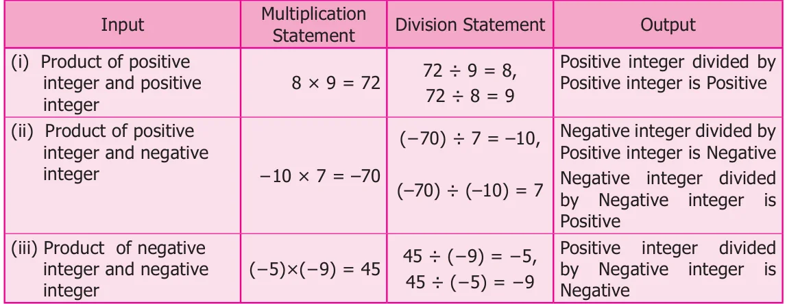
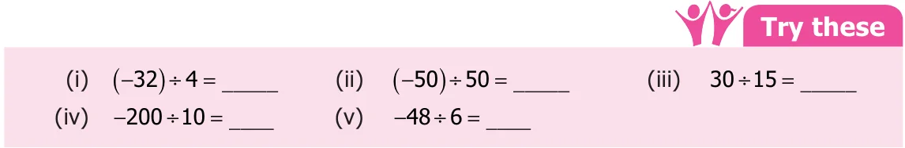
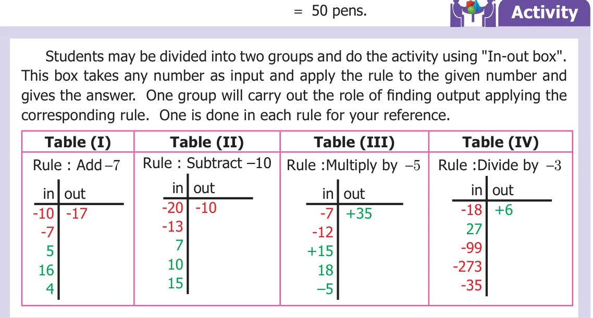
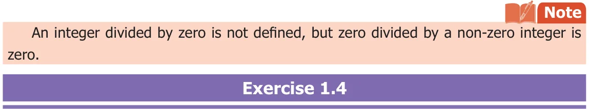

We have already seen that each multiplication statement has two division statements in whole numbers. Can we try the same for integers also; let us play with this number converter machine and see how division works.

From the above table, we infer that the division of two integers with the same sign is a positive integer. Division of two integers with opposite signs gives a negative integer.

Example 1.25
Divide: (i) ( \(- 85)\) by 5 (ii) ( \(- 250)\) by ( \(- 25)\) (iii) 120 by ( \(- 6)\) (iv) 182 by ( \(- 2)\)
Solution (i) ( \(- 85) \div 5 = - 17\) ( - ) \(\div\) ( \(- )= +10\)
- (iii)\(120 \div\) ( \(- 6) = - 20 \div\) ( \(- 2) = -\)
Example 1.26
In a competitive exam 4 marks are given for every correct answer and (-2) marks are given for every incorrect answer, kalaivizhi attended the exam and answered all the questions and scored 20 marks only even though she got 10 correct answers. How many questions did she answer incorrectly?
Solution
Marks given for one correct answer \(= 4\) Marks given for 10 correct answers \(= 10 \times 4\)
\(= 40\)
Kalaivizhi’s final score \(= 20\) Marks reduced for incorrect answers \(= 40 - 20\)
\(= 20\)
Therefore, number of questions answered incorrectly \(= 20 \div 2 = 10\)
Example 1.27
A shopkeeper earns a profit of ₹ 5 by selling one notebook and incurs a loss of ₹ 2 per pen while selling of his old stock. In a particular day he earns neither profit nor loss. If he sold 20 notebooks, how many pens did he sell?
Solution
Since neither profit nor loss Profit + Loss \(= 0\) (ie) profit = -Loss
Profit earned from 1 notebook = ₹ 5 Profit earned from 20 notebooks \(= 20 \times\) ₹ 5
= ₹ 100
Loss incurred by selling pens = ₹ 100 Loss
\(= - 100\)
Loss for 1 pen = ₹ 2
loss \(= - 2\)
Total number of pens sold = ( - ) \(\div\) ( - )

1.5.1 Properties of Division
Can you find the value when ( \(- 5)\) is divided by 3? The value is not an integer. Clearly, the collection of integers is not closed under division. Test it by taking 5 more examples To test the commutative property of division on integers, let us take \(- 5\) and 3.
( \(- 5) \div 3 \ne 3 \div\) ( \(- 5)\). Also \(5 \div\) ( \(- 3) \ne\) ( \(- 3) \div 5\) and ( \(- 5) \div\) ( \(- 3) \ne\) ( \(- 3) \div\) ( \(- 5)\) Therefore, division of integers are not commutative. Verify this with 5 more examples. Since the commutative property is not true, associative property does not hold. Let us take integers, \(- 7\) and 1.
( \(- 7) \div 1 = - 7\) but \(1 \div\) ( \(- 7) \ne - 7\).
Let us take ( \(- 6) \div\) ( \(- 1)\) and \(6 \div\) ( \(- 1)\).
( \(- 6) \div\) ( \(- 1) = 6\) and \(6 \div\) ( \(- 1) = - 6\).
Therefore, when we divide an integer by \(- 1\), we will not get the same integer. Hence, there does not exist an identity for division of integers. Take any five integers and verify the above.

- 1.Fill in the blanks.
- (i)( \(- 40) \div\) ____ \(= 40\) (ii) \(25 \div\) ____ \(= - 5\)
- (iii)____ \(\div\) ( \(- 4)= 9\) (iv) ( \(- 62) \div\) ( \(- 62)=\) ____
- 2.Say true or false.
- (i)( \(- 30) \div\) ( \(- 6)= - 6\) (ii) ( \(- 64) \div\) ( \(- 64)is 0\)
- 3.Find the values of the following.
- (i)( \(- 75) \div 5\) (ii) ( \(- 100) \div\) ( \(- 20)\)
- (iii)\(45 \div\) ( \(- 9)\) (iv) ( \(- 82) \div 82\)
- 4.The product of two integers is \(- 135\). If one number is \(- 15\), Find the other integer.
- 5.In 8 hours duration, with uniform decrease in temperature, the temperature
dropped \(24 ^{\circ}\) . How many degrees did the temperature drop each hour?
- 6.An elevator descends into a mine shaft at the rate of 5 m/sec. If the descent
starts from 15 m above the ground level, how long will it take to reach 250 m?
- 7.A person lost 4800 calories in 30 days. If the calory loss is uniform, calculate the loss
of calory per day.
- 8.Given \(168 \times 32 = 5376\) then, find ( \(- 5376) \div\) ( \(- 32)\) .